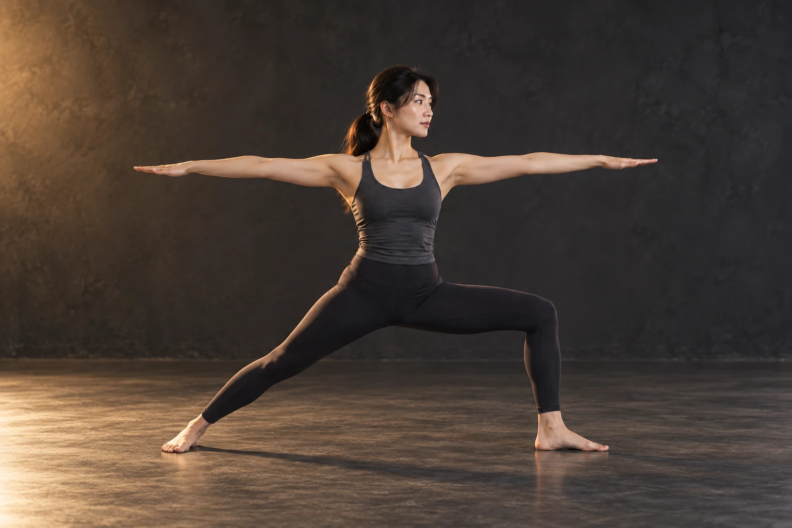
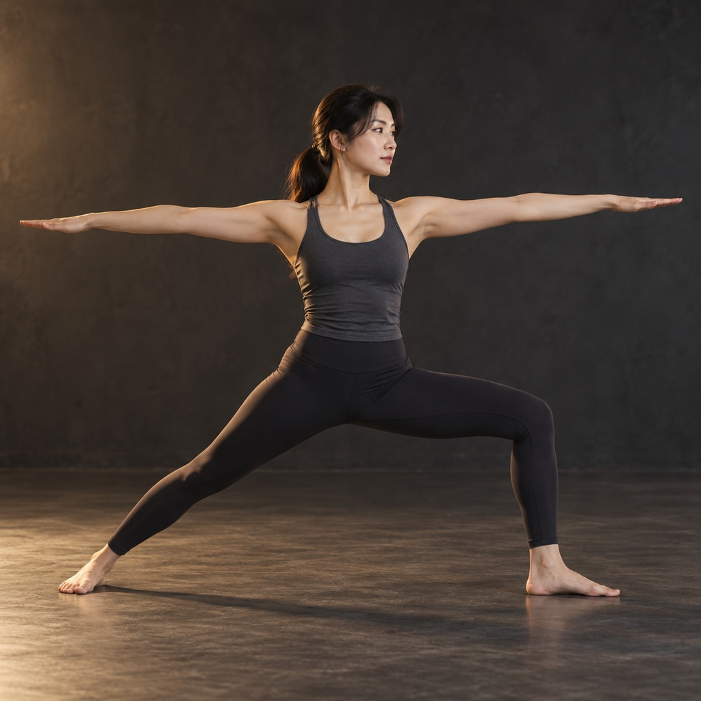

01
대표
플로우 리셋 레슨
굳은 몸을 여는 첫 흐름
아침마다 굳는 목·어깨·허리를 위한 1:1 레슨입니다. 호흡으로 긴장을 내리고, 작은 관절부터 흐름을 통과시켜 하루를 가볍게 시작하는 몸을 만듭니다.

마포 · 요가×필라테스 1:1 레슨
아침마다 굳어 있는 목과 허리 — 의지만으로는 풀리지 않습니다. 요가의 호흡과 필라테스의 정밀한 움직임을 한 수업에 담아, 스무 살의 유연함이 아니라 오늘 이후의 유연함을 만들어 드립니다.
01요가 RYT 200 · 필라테스 지도자 — 두 문법을 한 흐름으로
021:1 맞춤 시퀀스 — 첫 수업부터 숨과 동작이 이어집니다
03누적 지도 6,000시간 — 굳은 몸을 여는 순서를 압니다

01 — THE INSTRUCTOR
CREDENTIALS
몸을 움직임의 언어로 알게 된 시기입니다.
부상 후 요가로 회복하며 지도자의 길로 들어섰습니다.
요가의 흐름에 정밀한 움직임 문법을 더했습니다.
30~50대 회원 중심의 1:1 흐름 레슨을 이어가고 있습니다.
02 — IN MOTION
카드를 누르면 그 수업 기준으로 상담창이 열려요.
서울 마포구 · 요가·무브먼트 전문
굳은 몸을 여는 첫 흐름
아침마다 굳는 목·어깨·허리를 위한 1:1 레슨입니다. 호흡으로 긴장을 내리고, 작은 관절부터 흐름을 통과시켜 하루를 가볍게 시작하는 몸을 만듭니다.
자세를 지탱하는 안쪽 근육
매트와 리포머를 활용한 필라테스 수업입니다. 정확한 자세로 안쪽 근육을 깨워, 요가 흐름이 더 안정되고 일상 자세가 오래 견디는 힘을 만듭니다.
회원님만의 시퀀스를 설계
목표(유연성·자세·홈트 교정 등)에 따라 요가와 필라테스의 비율을 조절해 설계하는 레슨입니다. 수업마다 시퀀스를 기록해 다음 수업에서 그대로 이어 갑니다.
수업 시간·횟수는 상담에서 함께 정해요.
“몸은 명령으로 움직이지 않는다. 호흡이 먼저고, 흐름이 그다음이다.”
ONE FRAME
부담 없이 시작할 수 있도록 흐름을 정리해 뒀어요.
1 / BREATHE
그날의 몸 상태를 읽고 호흡으로 문을 여는 시간입니다.
2 / RELEASE
목·어깨·고관절을 부드럽게 지나가는 요가 흐름으로 굳음을 풉니다.
3 / BUILD
자세를 지탱하는 안쪽 근육을 정확한 자세로 깨웁니다.
4 / FLOW
배운 움직임을 이어 붙여 일상에서도 이어지는 흐름을 만듭니다.
04 — BEFORE WE MEET
운영 사이트에서는 강사의 정책에 맞춰 안내해요.
네. 첫 10분은 호흡과 작은 관절 움직임으로 시작해요. 유연성이 없는 분이 오히려 변화를 먼저 느끼는 편이고, 동작은 회원님 몸의 범위 안에서만 진행합니다.
처음에는 한 수업 안에서 자연스럽게 섞입니다. 요가의 흐름으로 몸을 열고 필라테스의 정밀한 움직임으로 고정하는 구조라, 두 수업을 따로 외울 필요가 없어요.
손끝이 바닥에 닿는 것이 목표가 아닙니다. 굳은 부분이 순서대로 풀리는 경험을 먼저 드리고, 범위는 그다음에 저절로 따라옵니다.
주 1회로 시작해 몸이 적응하면 주 2회로 늘리는 것을 권합니다. 흐름은 쉬는 날에도 이어지도록 짧은 홈 루틴을 함께 드려요.
오픈카카오톡으로 문의 주시면 목표와 빈도에 맞춰 상세히 안내드립니다.